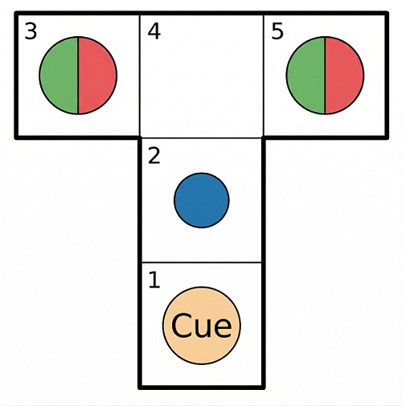
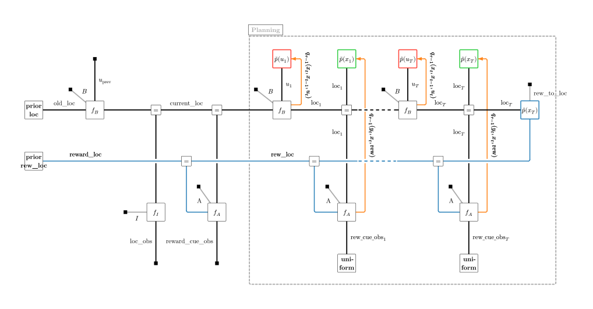
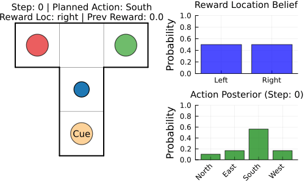

This example was automatically generated from a Jupyter notebook in the RxInferExamples.jl repository.
We welcome and encourage contributions! You can help by:
- Improving this example
- Creating new examples
- Reporting issues or bugs
- Suggesting enhancements
Visit our GitHub repository to get started. Together we can make RxInfer.jl even better! 💪
T-Maze Active Inference — Planning as Message Passing
This tutorial walks you through a complete implementation of an Active Inference agent that navigates a T-maze by minimising Expected Free Energy (EFE) via variational message passing in RxInfer.jl.
It builds on two key references:
- Paper 1: EFE-based Planning as Variational Inference (de Vries et al., 2025) — the foundational theorem.
- Paper 2: A Message Passing Realization of EFE Minimization (Nuijten et al., 2025) — the practical message-passing algorithm validated here.
1 · Setup and the T-Maze Problem
1.1 Package imports
using RxInfer, Distributions, Plots, LinearAlgebra, Random, StableRNGs, ColorSchemes, Tullio
using LogExpFunctions: softmax, xlogx, xlogy
1.2 The T-maze task
The agent starts at the center of the T-trunk and must reach the rewarded arm (left or right). It faces two challenges:
- Partial observability — reward location is hidden; a cue is only visible at the trunk bottom.
- Exploration–exploitation — the agent must decide whether to read the cue first or head directly for an arm.
The agent has four actions: North (1), East (2), South (3), West (4) to naviagate in the T-Maze consisting of 5 fields.
Here is a visualization, where the agent is marked as a blue dot.

We set up the necessary structures in julia:
Base.@kwdef mutable struct TMaze
agent_position::Tuple{Int,Int}
reward_position::Symbol
reward_values::Dict{Tuple{Int,Int},Float64}
end
const STATE_TO_POS = ((2, 1), (2, 2), (1, 3), (2, 3), (3, 3))
const POS_TO_STATE = Dict((2, 1) => 1, (2, 2) => 2, (1, 3) => 3, (2, 3) => 4, (3, 3) => 5)
function create_tmaze(reward_position::Symbol, start_position::Tuple{Int,Int})
reward_position in (:left, :right) || throw(ArgumentError("reward_position must be :left or :right"))
haskey(POS_TO_STATE, start_position) || throw(ArgumentError("Invalid start position. Must be one of: $(collect(STATE_TO_POS))"))
s = reward_position == :left ? 1.0 : -1.0
reward_values = Dict((1, 3) => s, (3, 3) => -s)
return TMaze(agent_position = start_position, reward_position = reward_position, reward_values = reward_values)
end
const ACTION_NAMES = ("North", "East", "South", "West")
@enum Direction::UInt8 North=1 East=2 South=3 West=4
action_to_string(i::Integer) = (1 <= i <= 4) ? ACTION_NAMES[i] : "Unknown"
# Deterministic dynamics: NEXT_STATE[current_state, action_idx] -> next_state
# action_idx: 1=North, 2=East, 3=South, 4=West
const NEXT_STATE = [
2 1 1 1;
4 2 1 2;
3 4 3 3;
4 5 2 3;
5 5 5 4;
]
Base.@kwdef mutable struct TMazeBeliefs
location::Categorical{Float64}
reward_location::Categorical{Float64}
action_posterior::Categorical{Float64}
end
initialize_beliefs_tmaze() = TMazeBeliefs(
location = Categorical(fill(1.0 / 5, 5)),
reward_location = Categorical([0.5, 0.5]),
action_posterior = Categorical(fill(0.25, 4)),
)
initialize_beliefs_tmaze (generic function with 1 method)2 · Theory: EFE as VI
2.1 The Expected Free Energy Cost Function
Before writing any model code it is worth understanding what the agent is trying to minimise.
For a candidate policy $u$, the Expected Free Energy $G(u)$ can be decomposed to a form with preferences over states, defined as:
\[G(u) \;=\; \underbrace{D_{KL}\!\bigl[q(x\!\mid\!u)\;\|\;\hat{p}(x)\bigr]}_{\text{risk}} +\underbrace{\mathbb{E}_{q(x|u)}\!\bigl[H[q(y\!\mid\!x)]\bigr]}_{\text{ambiguity}}\]
This decomposition shows that the cost function is composed of two primary drivers: risk, which measures the divergence between predicted outcomes and preferred states $\hat{p}(x)$ to keep the agent goal-oriented, and ambiguity, which calculates the expected uncertainty of future observations to encourage states with clear, informative data. By minimizing $G(u)$, the agent naturally balances these terms to produce behavior that is simultaneously goal-directed and information-seeking—offering a principled solution to the classic exploration–exploitation trade-off.
T-maze reading: without the cue, the reward location is highly uncertain. The agent's epistemic drive pushes it to the cue location first; once the cue is read, risk dominates and the agent heads for the correct arm.
2.2 · EFE as Variational Inference — The Key Theorem
2.2.1 Why the Tree Search approach fails
A naive implementation evaluates $G(u)$ for every candidate policy sequence. For a planning horizon $T$ and $|\mathcal{U}|$ actions, this requires $|\mathcal{U}|^T$ evaluations — intractable for any non-trivial horizon.
2.2.2 Planning as Variational Inference
The central insight of Paper 1 (Theorem 1) is that EFE minimisation arises naturally from minimising a standard Variational Free Energy (VFE) functional if we augment the generative model with few prior terms:
\[\mathcal{F}[q] \;\triangleq\; \mathbb{E}_{q(y,x,\theta,u)}\!\left[ \log\frac{q(y,x,\theta,u)}{p(y,x,\theta,u)\;\hat{p}(x)\;\tilde{p}(u)\;\tilde{p}(x)} \right]\]
The denominator is the ordinary generative model $p$ augmented by:
- a preference prior $\hat{p}(x)$ over desired future states, and
- two epistemic priors $\tilde{p}(u),\tilde{p}(x)$ that encode ambiguity-seeking and novelty-seeking drives.
Theorem 1 states that with the specific choices
\[\tilde{p}(u) \;\propto\; \exp\!\bigl(H[q(x\!\mid\!u)]\bigr) \\ \tilde{p}(x) \;\propto\; \exp\!\bigl(-H[q(y\!\mid\!x)]\bigr)\]
the VFE decomposes exactly as
\[\boxed{\mathcal{F}[q] \;=\; \mathbb{E}_{q(u)}[G(u)] \;+\; \underbrace{\mathbb{E}_{q(y,x,\theta,u)}\!\left[\log\tfrac{q(y,x,\theta|u)}{p(y,x,\theta|u)}\right]}_{\text{complexity } C(u)}\;+\; const.}\]
What this buys us: minimising $\mathcal{F}[q]$ over the variational posterior $q$ simultaneously
- reduces the expected EFE over policies, and
- keeps the posterior close to the Bayesian ideal (bounded-rationality term $C(u)$).
Because $\mathcal{F}[q]$ is a standard VFE, any off-the-shelf variational inference algorithm — including reactive message passing on a factor graph — can be used to minimise it. The combinatorial search is gone.
2.2.3 Why message passing works here
Factor graphs factorise $p(y,x,u)$ into local factors. Belief-propagation-style message passing finds stationary points of the Bethe free energy, which approximates the VFE. Because $\mathcal{F}[q]$ decomposes into local contributions, each node in the graph can run its own local update — and the global EFE is minimised as a side-effect.
2.3 · Epistemic Priors — Factorised Form for State-Space Models
Theorem 1 gives the priors in terms of global quantities $H[q(x|u)]$ and $H[q(y|x)]$. To take advantage of local computations, we factorize the state-space model into
\[p(y,x,u) \;=\; p(x_0)\prod_{t=1}^{T} p(y_t|x_t)\,p(x_t|x_{t-1},u_t)\,p(u_t)\]
With this factorized SSM Corollary 1 (Paper 2) reduces the priors to per-timestep, local expressions:
\[\tilde{p}(u_t) \;\propto\; \exp\!\bigl(H[q(x_t, x_{t-1}\!\mid\!u_t)] - H[q(x_{t-1}\!\mid\!u_t)]\bigr)\]
\[\tilde{p}(x_t) \;\propto\; \exp\!\bigl(-H[q(y_t\!\mid\!x_t)]\bigr)\]
These are exactly the two prior nodes we add to the factor graph:
| Node | Prior | Intuition |
|---|---|---|
| Exploration (action prior) | $\tilde{p}(u_t)$ — conditional entropy of the transition | favours actions that lead to uncertain future states → information seeking |
| Ambiguity (state prior) | $\tilde{p}(x_t)$ — negative entropy of the observation | favours states where observations aren't noisy → ambiguity reducing |
2.3.1 Circular dependency and its resolution
There is a subtlety: the priors at iteration $\tau$ depend on the posteriors $q_{\tau-1}$ from the previous iteration. We can resolve this circularity iteratively by initialising $q_0$ uniformly, and then alternating between
- Computing $\tilde{p}_\tau$ from previous VMP iteration $q_{\tau-1}$.
- Running one full round of message passing to get $q_\tau$.
This approach, while solving the issue of interdependencies, incorporates a limitation: Convergence is empirically observed even though it is not guaranteed in general.
3 · The Augmented Factor-Graph Model
Now let's head back to our challenge. We start by drawing the graph of the generative model. The figure below illustrates the augmented Forney-style factor graph for the T-maze agent, unfolded from the current state through a planning horizon ($t = 1 \dots T$). The original generative model (transition and observation factors) is shown in white; the two added epistemic prior nodes are shown in red (Exploration) and green (Ambiguity) whereas the preference prior in blue.

Each timeslice $t$ contains:
\[f_B = p(x_t | x_{t-1}, u_t)\]
— deterministic location transition.\[f_A = p(y_t | x_t, rew)\]
— observation factor (reward cue depends on reward location $r$).\[\tilde{p}(u_t)\]
— Exploration epistemic prior on the action.\[\tilde{p}(x_t)\]
— Ambiguity epistemic prior on the state.\[\hat{p}(x_t)\]
— preference prior (only at the terminal step, encoding the desired goal state).
The orange directed edges in the diagram indicate the local joint beliefs from the previous VMP iteration $q_{\tau-1}$ computed at the transition and observation nodes.
In RxInfer we can write this the following:
@model function efe_tmaze_agent(reward_observation_tensor, location_transition_tensor, prior_location, prior_reward_location, reward_to_location_mapping, u_prev, T, reward_cue_observation, location_observation)
old_location ~ Categorical(prior_location)
reward_location ~ Categorical(prior_reward_location)
current_location ~ DiscreteTransition(old_location, location_transition_tensor, u_prev)
location_observation ~ DiscreteTransition(current_location, diageye(5))
reward_cue_observation ~ DiscreteTransition(current_location, reward_observation_tensor, reward_location)
previous_location = current_location
for t in 1:T
# Step 1 — allocate storage for q_{τ-1} (Bethe beliefs from previous VFE iteration)
loc_marginalstorage = JointMarginalStorage(Contingency(ones(size(location_transition_tensor))))
observation_marginalstorage = JointMarginalStorage(Contingency(ones(size(reward_observation_tensor))))
# Step 2 — Exploration prior p̃(u_t): computed from stored transition beliefs from previous VMP
u[t] ~ Exploration(reward_cue_observation) where {meta=loc_marginalstorage}
# Step 3 — State transition; joint belief q(x_t, x_{t-1}, u_t) is saved into loc_marginalstorage
location[t] ~ DiscreteTransition(previous_location, location_transition_tensor, u[t]) where {meta=loc_marginalstorage}
# Step 4 — Simulate future observation; joint q(y_t, x_t) is saved into observation_marginalstorage
future_rew_cue_obs[t] ~ DiscreteTransition(location[t], reward_observation_tensor, reward_location) where {meta=observation_marginalstorage}
future_rew_cue_obs[t] ~ Categorical([0.5, 0.5]) # closes the half-edge on the factor graph
# Step 5 — Ambiguity prior p̃(x_t): computed from stored observation beliefs from previous VMP
location[t] ~ Ambiguity(reward_cue_observation) where {meta=observation_marginalstorage}
previous_location = location[t]
end
location[end] ~ DiscreteTransition(reward_location, reward_to_location_mapping)
end
4 · Implementation of epistemic priors
Looking at this model we see a few curiosities.
4.1 JointMarginalStorage — saving Bethe beliefs between iterations
A few nodes have an extra meta attribute.
We remember that the epistemic priors at iteration $\tau$ require the joint posteriors $q_{\tau-1}(x_t, x_{t-1}, u_t)$ and $q_{\tau-1}(y_t, x_t)$ from the previous message-passing sweep. Therefor we create a mutable container that RxInfer's marginal rules can write into:
mutable struct JointMarginalStorage{C}
joint_marginal::C
end
function set_marginal!(jmm::JointMarginalStorage{C}, marginal::C) where {C}
jmm.joint_marginal = marginal
return jmm
end
set_marginal! (generic function with 1 method)4.2 Custom @marginalrule — intercepting the joint beliefs
On a factor graph, the Bethe beliefs around a factor node $f$ are calculated as a product of the factor function and the incoming messages. For $f(x_t, x_{t-1}, u_t)$ this means:
\[q(x_t, x_{t-1}, u_t) \;\propto\; f_B(x_t, x_{t-1}, u_t)\; m_{x_t \to f}(x_t)\; m_{x_{t-1} \to f}(x_{t-1})\; m_{u_t \to f}(u_t)\]
In RxInfer we can intercept this computation via a custom @marginalrule that calls the built-in rule, and then stores the result in the previously created JointMarginalStorage:
@marginalrule DiscreteTransition(:out_in_T1) (m_out::Categorical,
m_in::Categorical,
m_T1::Categorical,
q_a::PointMass{<:AbstractArray{T,3}},
meta::JointMarginalStorage) where {T} = begin
marginal = @call_marginalrule DiscreteTransition(:out_in_T1) (m_out=m_out, m_in=m_in, m_T1=m_T1, q_a=q_a, meta=nothing)
set_marginal!(meta, marginal)
return marginal
end
4.3 Exploration node — the action epistemic prior $\tilde{p}(u_t)$
The action prior is derived as: $\tilde{p}(u_t) \propto \exp(\mathbb{E}_{q(x_t, x_{t-1} \mid u_t)} \left[ -\log q(x_t \mid x_{t-1}, u_t) \right]) = \exp(H_q(\mathbf{x}_t \mid \mathbf{x}_{t-1}, u_t))$
To make use of optimized log-function calculations in julia we calculate this conditional entropy in its decomposed form as: $H_q(\mathbf{x}_t \mid \mathbf{x}_{t-1}, u_t) = -\sum_{x_t, x_{t-1}} \Big[ q(x_t, x_{t-1} \mid u_t) \log q(x_t, x_{t-1} \mid u_t) - q(x_t, x_{t-1} \mid u_t) \log q(x_{t-1} \mid u_t) \Big]$
To handle the updating of these parameters easily we define a custom factor node and a rule that implements this computation.
To ensure the custom nodes send their messages in each VMP iteration and follow the correct message-passing order (nodes that depend on observation marginals send their message after nodes that only depend on prior variabels), we use a dummy trigger data variable on the in edge. This "trick" enforces the required dependency and message-passing order without affecting the underlying mathematical computation.
struct Exploration end
@node Exploration Stochastic [out, in]
# Conditional entropy H(X|Y): measures uncertainty in X given Y
# Uses the identity H(X|Y) = H(X,Y) - H(Y), computed elementwise via xlogx/xlogy
function conditional_entropy(x)
h = sum(x, dims=1) # marginal over rows → p(y)
@tullio res := -(xlogx(x[a,b]) - xlogy(x[a,b], h[b]))
end
@rule Exploration(:out, Marginalisation) (q_in::Any, meta::JointMarginalStorage,) = begin
slices = normalize.(eachslice(components(meta.joint_marginal), dims=3), 1)
entropies = conditional_entropy.(slices)
return Categorical(softmax(entropies))
end
RxInfer.ReactiveMP.sdtype(any::RxInfer.ReactiveMP.StandaloneDistributionNode) = ReactiveMP.Stochastic() # define the node as stochastic (not deterministic)
4.4 Ambiguity node — the state epistemic prior $\tilde{p}(x_t)$
The state prior evaluates the information value of specific locations. It is defined as
\[\tilde p(x_t) \propto \exp(\mathbb{E}_{q(y_t|x_t)}[\log q(y_t|x_t)]) = \exp(-H_q[y_t|x_t])\]
In the T-maze, the hidden state factorizes into agent location and reward location: $x_t = \{ x_t^{loc}, x_t^{rew} \}$. So the prior becomes specifically epistemic value for an agent's location averages over possible reward locations:
\[\tilde{p}(x_t^{loc}) \propto \exp(H_q(\mathbf{y}_t \mid x_t^{loc}, \mathbf{x}_t^{rew}))\]
Similarily as the Exploration node we create a custom node for the epistemic action prior and define its rule based on the formula above.
struct Ambiguity end
@node Ambiguity Stochastic [out, in];
@rule Ambiguity(:out, Marginalisation) (q_in::Any, meta::JointMarginalStorage,) = begin
slices = normalize.(eachslice(components(meta.joint_marginal), dims=2), 1)
entropies = entropy.(slices)
return Categorical(softmax(-entropies))
end
5 · The Iterative VFE Algorithm
Before starting the inference we still need to initialize some messages, since we have a loop in our factor graph and we need to define the agents knowledge about the environment (stored in the A and B matrices).
function create_reward_observation_tensor()
obs = fill(0.5, 2, 5, 2)
obs[:, 1, 1] .= (1.0, 0.0)
obs[:, 1, 2] .= (0.0, 1.0)
return obs
end
function create_location_transition_tensor()
T = zeros(Float64, 5, 5, 4)
for s in 1:5, a in 1:4
T[NEXT_STATE[s, a], s, a] = 1.0
end
return T
end
function create_reward_to_location_mapping()
m = zeros(Float64, 5, 2)
m[3, 1] = 1.0
m[5, 2] = 1.0
return m
end
tensors = (
reward_observation = create_reward_observation_tensor(),
location_transition = create_location_transition_tensor(),
reward_to_location = create_reward_to_location_mapping()
)
(reward_observation = [1.0 0.5 … 0.5 0.5; 0.0 0.5 … 0.5 0.5;;; 0.0 0.5 … 0.
5 0.5; 1.0 0.5 … 0.5 0.5], location_transition = [0.0 0.0 … 0.0 0.0; 1.0 0.
0 … 0.0 0.0; … ; 0.0 1.0 … 1.0 0.0; 0.0 0.0 … 0.0 1.0;;; 1.0 0.0 … 0.0 0.0;
0.0 1.0 … 0.0 0.0; … ; 0.0 0.0 … 0.0 0.0; 0.0 0.0 … 1.0 1.0;;; 1.0 1.0 … 0
.0 0.0; 0.0 0.0 … 1.0 0.0; … ; 0.0 0.0 … 0.0 0.0; 0.0 0.0 … 0.0 1.0;;; 1.0
0.0 … 0.0 0.0; 0.0 1.0 … 0.0 0.0; … ; 0.0 0.0 … 0.0 1.0; 0.0 0.0 … 0.0 0.0]
, reward_to_location = [0.0 0.0; 0.0 0.0; … ; 0.0 0.0; 0.0 1.0])@initialization function efe_tmaze_agent_initialization(prior_location, prior_reward_location, prior_future_locations)
μ(old_location) = prior_location
μ(reward_location) = prior_reward_location
μ(location) = prior_future_locations
end
"""
Initialize beliefs for inference, either from scratch or warm-started from the previous result.
Warm-starting accelerates convergence by beginning from a sensible prior.
"""
function get_initialization_tmaze(initialization_fn, beliefs, previous_result::Nothing)
future_location_beliefs = vague(Categorical, 5)
return initialization_fn(beliefs.location, beliefs.reward_location, future_location_beliefs)
end
function get_initialization_tmaze(initialization_fn, beliefs, previous_result)
current_location_belief = last(previous_result.posteriors[:location])[1]
future_location_beliefs = last(previous_result.posteriors[:location])[2:end]
reward_location_belief = last(previous_result.posteriors[:reward_location])
return initialization_fn(current_location_belief, reward_location_belief, future_location_beliefs)
end
get_initialization_tmaze (generic function with 2 methods)Now we can define the infer() function.
Since the epistemic priors depend on the current posterior, inference is run iteratively as explained in Algorithm 1 (Paper 2):
Input: generative model $p(y,x,u)$, preference prior $\hat{p}(x)$, $\tau_{max}$ iterations Output: policy posterior $q(u)$ $q_0(y,x,u) ←$ uninformative for $\tau = 1$ … $\tau_{max}$: for each timestep t: $p̃_τ(u_t) ← σ( H[q_{τ-1}(x_t, x_{t-1} | u_t)] − H[q_{τ-1}(x_{t-1} | u_t)] )$ $p̃_τ(x_t) ← σ( −H[q_{τ-1}(y_t | x_t)] )$ end $q_\tau(y,x,u) ←$ infer( $p(y,x,u)$ with updated priors ) end return $q_{τ_{max}}(u)$
In the RxInfer implementation:
- JointMarginalStorage holds the joint Bethe beliefs from iteration $\tau-1$.
- The
ExplorationandAmbiguity@rules use the updatedJointMarginalsfrom storage, compute and emit messages proportional to the entropy expressions above. - The outer
for τloop is theiterationsparameter passed toinfer(...).
"""
Execute a single environment step: run τ_max iterations of VFE minimisation
and return the action with highest posterior probability.
"""
function execute_step_tmaze(
env, position_obs, reward_cue, beliefs, model, tensors, config, time_remaining,
previous_result, previous_action_idx; initialization_fn)
1 <= previous_action_idx <= 4 || throw(ArgumentError("Invalid previous action index: $previous_action_idx"))
previous_action_vec = Float64.(1:4 .== previous_action_idx)
initialization = get_initialization_tmaze(initialization_fn, beliefs, previous_result)
# infer() runs τ_max = config.n_iterations message-passing sweeps,
# each sweep using the epistemic priors computed from the joint beliefs stored from the sweep before.
result = infer(
model=model(
reward_observation_tensor = tensors.reward_observation,
location_transition_tensor = tensors.location_transition,
prior_location = probvec(beliefs.location),
prior_reward_location = probvec(beliefs.reward_location),
reward_to_location_mapping = tensors.reward_to_location,
u_prev = previous_action_vec,
T = time_remaining
),
data = (
location_observation=position_obs,
reward_cue_observation=reward_cue),
options = (force_marginal_computation=true,), # needed to compute the joints of transition and observation node
iterations = config.n_iterations,
initialization = initialization
)
next_action_idx = Int(mode(first(last(result.posteriors[:u]))))
beliefs.location = last(result.posteriors[:current_location])
beliefs.reward_location = last(result.posteriors[:reward_location])
beliefs.action_posterior = first(last(result.posteriors[:u]))
return next_action_idx, result
end
Main.var"##WeaveSandBox#277".execute_step_tmaze6 · Running the Agent
Hidden block of Step!() function and its helpers - click to expand
function next_position(pos::Tuple{Int,Int}, next_action_idx::Int)
1 <= next_action_idx <= 4 || throw(ArgumentError("Invalid action index: $next_action_idx"))
s = POS_TO_STATE[pos]
a = next_action_idx
return STATE_TO_POS[NEXT_STATE[s, a]]
end
function create_position_observation(env::TMaze)
obs = zeros(Float64, 5)
obs[POS_TO_STATE[env.agent_position]] = 1.0
return obs
end
function create_reward_cue(env::TMaze)
return env.agent_position == (2, 1) ?
(env.reward_position == :left ? [1.0, 0.0] : [0.0, 1.0]) :
[0.5, 0.5]
end
get_reward(env::TMaze) = get(env.reward_values, env.agent_position, 0.0)
function step!(env::TMaze, next_action_idx::Int)
env.agent_position = next_position(env.agent_position, next_action_idx)
return create_position_observation(env), create_reward_cue(env), get_reward(env)
end
nothing
Hidden block of Visualization and Plotting - click to expand
scheme = colorschemes[:Paired_9]
const MAZE_THEME = (agent=scheme[2], cue=scheme[7], reward_positive=scheme[4],
reward_negative=scheme[6], corridor=:white, wall=:black, background=:white
)
function plot_tmaze(env::TMaze)
p = Plots.plot(
aspect_ratio=:equal, legend=false, axis=false, grid=false, ticks=false,
background_color=MAZE_THEME.background, size=(300, 300), frame=:none, margin=0Plots.mm
)
scale = 20
Plots.plot!(p, [1, 2, 2, 1], [1, 1, 4, 4], seriestype=:shape, c=MAZE_THEME.corridor, lw=0)
Plots.plot!(p, [0, 3, 3, 0], [3, 3, 4, 4], seriestype=:shape, c=MAZE_THEME.corridor, lw=0)
wall_x = [1, 1, NaN, 2, 2, NaN, 0, 3, NaN, 0, 1, NaN, 2, 3, NaN, 1, 2, NaN, 0, 0, NaN, 3, 3]
wall_y = [1, 3, NaN, 1, 3, NaN, 4, 4, NaN, 3, 3, NaN, 3, 3, NaN, 1, 1, NaN, 3, 4, NaN, 3, 4]
Plots.plot!(p, wall_x, wall_y, color=MAZE_THEME.wall, linewidth=2)
grid_x = [1, 2, NaN, 1, 2, NaN, 1, 1, NaN, 2, 2]
grid_y = [2, 2, NaN, 3, 3, NaN, 3, 4, NaN, 3, 4]
Plots.plot!(p, grid_x, grid_y, color=MAZE_THEME.wall, linewidth=0.5, alpha=0.7)
left_c = env.reward_position == :left ? MAZE_THEME.reward_positive : MAZE_THEME.reward_negative
right_c = env.reward_position == :right ? MAZE_THEME.reward_positive : MAZE_THEME.reward_negative
Plots.scatter!(p, [0.5, 2.5, 1.5], [3.5, 3.5, 1.5],
color=[left_c, right_c, MAZE_THEME.cue],
markersize=ceil(Int, scale), alpha=0.7, markerstrokewidth=ceil(Int, scale / 15)
)
x = env.agent_position[1] - 0.5
y = env.agent_position[2] + 0.5
if env.agent_position != (2, 1)
Plots.annotate!(p, 1.5, 1.5, Plots.text("Cue", :black, ceil(Int, scale / 2)))
end
Plots.scatter!(p, [x], [y],
markersize=ceil(Int, (2 / 3) * scale), color=MAZE_THEME.agent,
markerstrokewidth=ceil(Int, scale / 15), markerstrokecolor=MAZE_THEME.wall
)
return p
end
function plot_reward_location_belief(beliefs::TMazeBeliefs)
probs = probvec(beliefs.reward_location)
bar(["Left", "Right"], probs, title="Reward Location Belief", titlefontsize=10,
ylabel="Probability", ylims=(0, 1), color=:blue, alpha=0.7, legend=false)
end
function plot_action_posterior(beliefs::TMazeBeliefs, step_number::Int)
probs = probvec(beliefs.action_posterior)
bar(["North", "East", "South", "West"], probs,
title="Action Posterior (Step: $step_number)", titlefontsize=10,
ylabel="Probability", ylims=(0, 1), color=:green, alpha=0.7,
legend=false, xrotation=45)
end
nothing
To better understand what is actually happening under the hood, we define a function that runs a T-maze episode and exports it as an animated GIF. At each step, it updates beliefs via inference, executes the chosen action in the environment, and renders a frame combining maze state, reward-location belief, and action posterior for the next action $u_t$ until the horizon or goal is reached.
function run_and_record_tmaze_gif(model, tensors, config, seed;
initialization_fn, filename="tmaze_agent.gif")
rng = StableRNG(seed)
reward_position = rand(rng, [:left, :right])
env = create_tmaze(reward_position, (2, 2))
beliefs = initialize_beliefs_tmaze()
previous_result = nothing
previous_action_idx = 2
reward = 0.0
position_obs = create_position_observation(env)
reward_cue = create_reward_cue(env)
println("Recording T-Maze episode (Reward: $reward_position) to $filename...")
function make_frame(title, t)
p_maze = plot_tmaze(env)
title!(p_maze, title, titlefontsize=10)
plot(p_maze, plot_reward_location_belief(beliefs),
plot_action_posterior(beliefs, config.time_horizon - t),
layout=@layout([a{0.6w} [b; c]]), size=(500, 300))
end
reached_goal = false
anim = @animate for t in config.time_horizon:-1:0
if reached_goal
make_frame("Goal Reached!\nReward Loc: $reward_position | Reward: $reward", t)
end
if t > 0
next_action_idx, result = execute_step_tmaze(
env, position_obs, reward_cue, beliefs, model, tensors, config,
t, previous_result, previous_action_idx;
initialization_fn)
previous_result = result
previous_action_idx = next_action_idx
make_frame("Step: $(config.time_horizon - t) | Planned Action: $(action_to_string(next_action_idx))\nReward Loc: $reward_position | Prev Reward: $reward", t)
position_obs, reward_cue, reward = step!(env, next_action_idx)
reward == 1 && (reached_goal = true)
end
sleep(config.wait_time)
end
gif(anim, filename, fps=1)
end
run_and_record_tmaze_gif (generic function with 1 method)Finally we configure the planning horizon and number of VFE iterations, and run the defined code.
config = (
time_horizon = 4, # planning horizon T
n_iterations = 3, # τ_max VFE iterations per environment step
wait_time = 0.2, # needed for creating the gif
seed = 42
)
run_and_record_tmaze_gif(
efe_tmaze_agent,
tensors,
config,
config.seed;
initialization_fn = efe_tmaze_agent_initialization
)
nothing
Recording T-Maze episode (Reward: right) to tmaze_agent.gif...
7 · Summary
7.1 What did the epistemic priors actually do?
At the start the agent does not know which arm holds the reward. Without epistemic priors (KL-control), the agent would simply minimise risk and head for a random arm or whichever arm its weak prior slightly favours — potentially the wrong one. With the Exploration and Ambiguity priors, the agent first visits the cue location (state 1) to resolve the ambiguity, then navigates directly to the correct arm.
7.2 Scalability
Traditional EFE evaluation scales as $|\mathcal{U}|^T$. The message-passing approach scales linearly in $T$ and $|\mathcal{U}|$ because each factor node only communicates with its direct neighbours. The Minigrid door-key experiment in Paper 2 (observation space $\approx 5^{49}$, horizon $T = 22$) would be completely intractable with direct EFE computation but runs efficiently with this method.
7.3 Limitations and open questions
- Convergence is not guaranteed for the iterative prior-update scheme when
n_iterations > 1. Empirically, the Bethe Free Energy converges for the tested environments (see Appendix D.1 and E.1 of Paper 2). - Parameter learning (the novelty term in the full EFE) is not implemented here; this is left for future work as in "Active Inference is a Subtype of Variational Inference".
- The epistemic priors are defined in closed form but their iterative online update between VMP iterations in a streaming setting requires further elaboration.
7.4 Further reading
- Stochastic Maze - EFE as VI : an advanced rxinfer tutorial
- Paper 1 — EFE-based Planning as Variational Inference
- Paper 2 — A Message Passing Realization of EFE Minimization
- Active Inference is a Subtype of Variational Inference — includes parameter learning
This example was automatically generated from a Jupyter notebook in the RxInferExamples.jl repository.
We welcome and encourage contributions! You can help by:
- Improving this example
- Creating new examples
- Reporting issues or bugs
- Suggesting enhancements
Visit our GitHub repository to get started. Together we can make RxInfer.jl even better! 💪
This example was executed in a clean, isolated environment. Below are the exact package versions used:
For reproducibility:
- Use the same package versions when running locally
- Report any issues with package compatibility
Status `/tmp/jl_BKMWxI/Project.toml`
[35d6a980] ColorSchemes v3.31.0
[31c24e10] Distributions v0.25.131
⌅ [2ab3a3ac] LogExpFunctions v0.3.29
[91a5bcdd] Plots v1.41.7
[86711068] RxInfer v5.5.2
[860ef19b] StableRNGs v1.0.4
[bc48ee85] Tullio v0.3.9
[37e2e46d] LinearAlgebra v1.12.0
[9a3f8284] Random v1.11.0
Info Packages marked with ⌅ have new versions available but compatibility constraints restrict them from upgrading. To see why use `status --outdated`